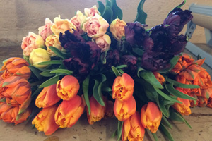

Designing with Tulips!
Class this coming Sunday, April 3, 2016 1-3pm in Seattle.
Join us for an afternoon class on April 3rd where we will be inspired by the harbinger of spring – the Tulip! Tulips come in an incredible range of colors and shapes – from the subtle pastels to the bold and bright parrot tulips. We'll discuss the care & handling of tulips while designing a lush, garden style flower arrangement. Our vessel of choice will be a compote using chicken wire as the support structure.
Following Alicia's demonstration each student will create their own floral arrangement masterpiece to take home.
Date: Sunday, April 3, 2016
Location: Floressence Design Studio, 5628 Airport Way S #240, Seattle, WA 98108
Time: 1pm to 3pm
Investment: $225.00 per person